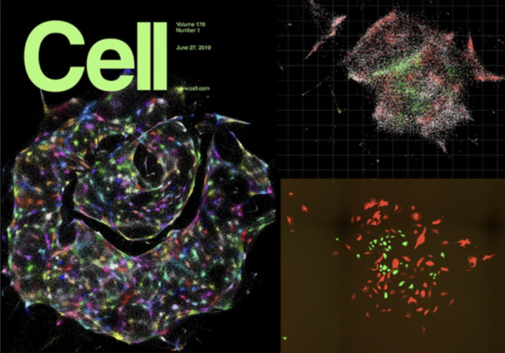

Research
Unanticipated technologies can blossom from seemingly unrelated developments. Solid-state quantum theory gave us the transistor; the economics of video-gaming gave us scaling in GPU production which, in turn, precipitated the achievability of modern AI. Our laboratory develops DNA microscopy—a sequencing-based approach to spatial biology that extends from two-dimensional cell cultures to three-dimensional intact organisms.
DNA microscopy operates on a foundational principle: spatial relationships between biomolecules can be encoded into DNA sequences through controlled biochemical networks, then reconstructed computationally without optical systems. We have demonstrated this concept across multiple scales, from our initial work on planar cellular imaging to recent advances enabling volumetric reconstruction of intact organisms.
Volumetric DNA Microscopy
Our 2025 work in Nature Biotechnology introduces volumetric DNA microscopy, which captures three-dimensional spatial transcriptomic information from intact specimens. The method establishes a distributed network of DNA barcodes throughout the specimen, with molecular proximities encoded through controlled biochemical reactions spanning multiple length scales—anchored rolling circle amplification for short-range interactions (~1 μm) and in vitro transcription for longer-range diffusion (~10-50 μm).

The approach uses geodesic spectral embedding algorithms to infer three-dimensional coordinates from the resulting proximity networks, achieving theoretical median resolution of approximately 1.5 μm. This enables organism-scale spatial transcriptomics without prior knowledge of genome organization or spatial templates.
Planar DNA Microscopy
Take the following simple example. Let's say that you want to map the locations of every person on the surface of the earth. There are two ways you can imagine approaching this problem. One is, you can send up a satellite around the earth and take photographs. Two is, you can look at the Bluetooth pings between individuals' mobile phones. If you record enough of those pings, you can reconstruct everyone's relative positions without prior knowledge (or a map). DNA microscopy achieves this for biomolecules, instead of people. In short, in DNA microscopy, rather than using a large apparatus to zero in on specific locations within the sample, we deploy a massive mix of random, artificial DNA molecules, that give each biomolecule its own unique molecular identity (a molecular IP address).
We then turn these molecules into a massive intercommunicating network that goes to work encoding molecular proximities across the specimen (in cells or tissue) into brand new DNA sequences. Reading these proximities out by high-throughput DNA sequencing, and applying advances in numerical computing, we can infer an image of the original sample (similar to the mobile phone positions in the original example).
In 2019, we demonstrated this for the first time in two dimensions, showcasing the potential of DNA microscopy in providing high-resolution, spatially resolved genomic data without the need for traditional optical microscopy.
Publications
- Qian, N., Weinstein, J.A., et al. "Spatial transcriptomic imaging of an intact organism using volumetric DNA microscopy." Nat Biotechnol (2025). (paper, pre‑print)
- Weinstein JA, Regev A, Zhang F. "DNA microscopy: Optics-free spatio-genetic imaging by a stand-alone chemical reaction." Cell. 2019 Jun 27. (paper, pre-print)
- Vollmers C, Sit RV, Weinstein JA, Dekker CL, Quake SR. "Genetic measurement of memory B-cell recall using antibody repertoire sequencing." Proc Natl Acad Sci USA. 2013 Jul 29. (paper)
News & Media
- Volumetric imaging using a distributed molecular network (March 27, 2025)
- DNA microscope creates 3D images of organisms from the inside out (March 27, 2025)
- 2021 Damon Runyon Innovation Award Announcement (January 11, 2021)
- 2020 Moore Inventor Fellow Announcement (September 16, 2020)
- Discover Magazine (December 21, 2019) - #33 in "Top science stories of 2019"